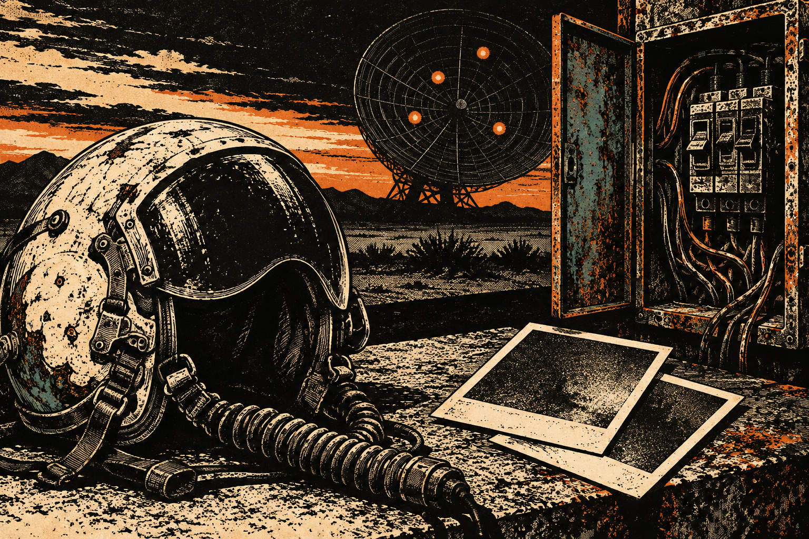
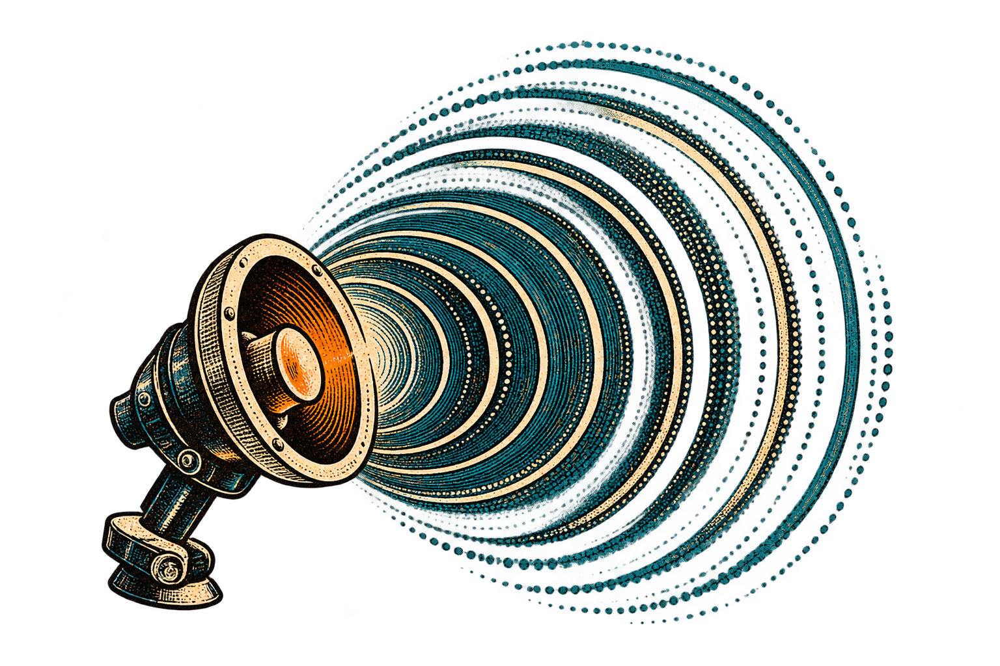
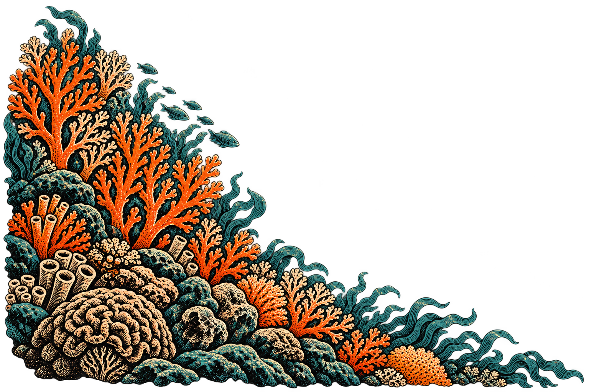
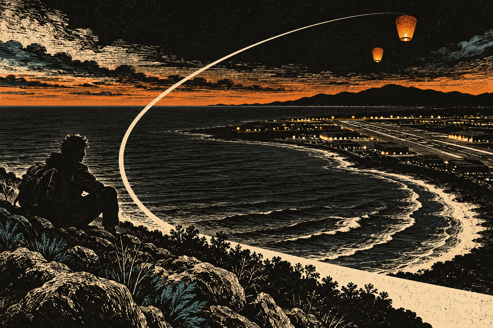
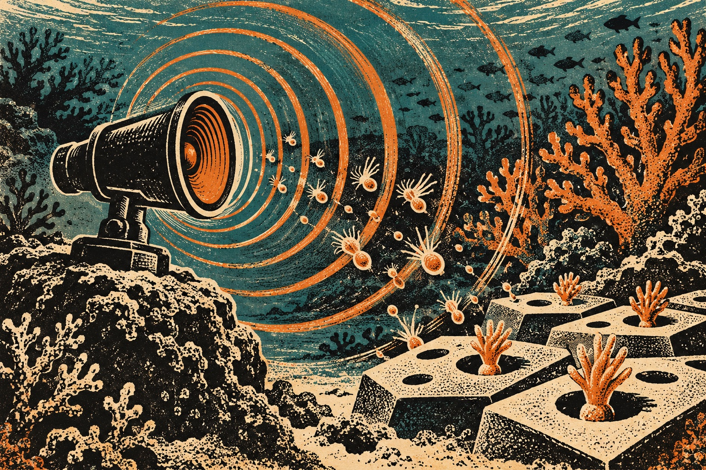
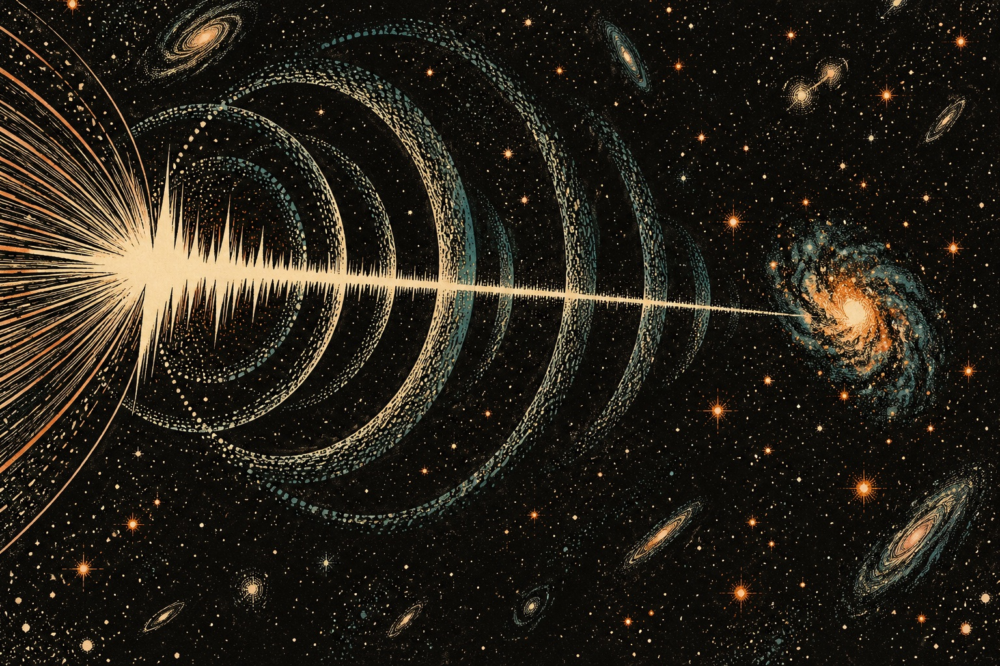
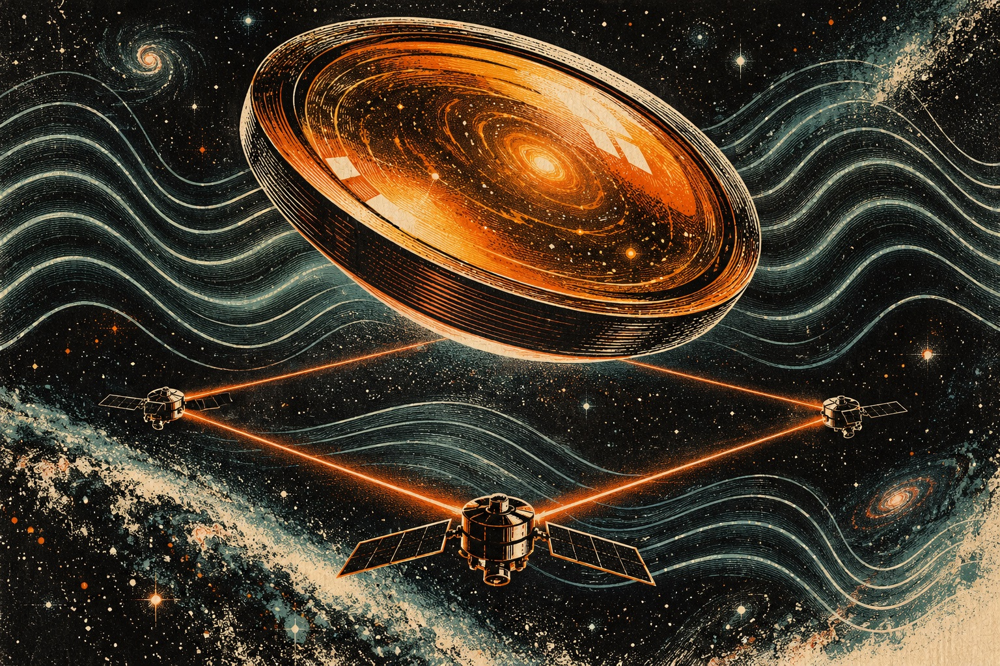

Four radar contacts. Two photographs.
A failed recorder. A tripped breaker. Four contacts on radar, but only one object in the photographs.
Read the case file ↗An exploded illustration connects reef sound, a distant galaxy and a glass telescope.
Open the edition ↓

Three newly added archive files. Equipment failures, disputed flight paths and a missing heading. Each conclusion stays attached to the record that supports it.

A failed recorder. A tripped breaker. Four contacts on radar, but only one object in the photographs.
Read the case file ↗
The thermal clip seemed to show a plunge into the Atlantic. A reconstruction keeps the objects over land.
Read the case file ↗A 34-second clip survived. The original recording and its metadata did not. That changes what can be calculated.
Read the case file ↗These are dated archive features, not new sightings. AARO’s assessments are attributed findings; this publication has not independently reproduced its calculations. Unidentified objects remain unidentified where the evidence stops.
A haunting in boxes. A palace experiment. A photographer’s second face. Three new archive features, followed by the surviving sample from the Gef case.
Tenancy papers, séance transcripts, accusations. The house acquired a reputation; its archive lost its original order.
Read the case file ↗Visitors recorded unusual experiences in particular rooms. The pattern was measurable. Its cause was another matter.
Read the case file ↗Two women, neither named. A museum catalogue preserves the photograph long after the pitch about the dead.
Read the case file ↗Strange nature / new research

Scientists in Hawaii played recordings of a bustling reef through an underwater speaker, then watched where baby corals settled. Artificial structures nearest the speaker collected the most coral recruits, especially when coated with a living bacterial material. The experiments ran in 2023 and 2024; the new coral study was published October 8. The results suggest a way to encourage settlement, rather than proof that a damaged reef has been rebuilt.
Read UC San Diego ↗Source published 2026-10-08 · checked 2026-10-10Strange science / astronomy

A radio flash lasting milliseconds has led astronomers to an unexpectedly small galaxy in the early universe. Webb identified the home of the farthest fast radio burst yet reported, dating it to when the universe was about three billion years old. The galaxy was roughly a thousand times less massive than researchers expected and busy making stars. Its youth supports a young, highly magnetic neutron star as one explanation. The burst was detected in 2024; the new findings concern its host and distance. Its exact cause remains uncertain.
Read NASA ↗Source published 2026-10-08 · checked 2026-10-10Strange technology / space

NASA is advancing a telescope made from a glass-ceramic material for an observatory designed to measure distance changes smaller than a helium atom. LISA’s three future spacecraft will exchange laser beams across a triangle 1.6 million miles on each side, looking for passing gravitational waves. The newly announced engineering telescope is the last pre-flight test unit before flight hardware. Its amber-colored material resists changing shape with temperature. LISA remains a future mission, slated for the mid-2030s.
Read NASA ↗Source published 2026-10-08 · checked 2026-10-10The landlord left a spare key beneath the mat. “Only use it if someone locks you out,” she said. That night, a key scraped inside the front door. I checked the hall. Empty. In the morning, the spare lay on my kitchen table, warm as a hand. Beneath it was a note in my handwriting: Let me back in.
A rotating collection of four short tales. Stories repeat; these are invented, not reported events.
The Daily Drift follows the odd corners of the news and brings back a few good stories. Short reports. Original words. The evidence stays attached.
Every factual news story links to the reporting behind it. Folklore and original fiction are clearly labeled. We write original summaries, keep important uncertainty intact, and hold stories we cannot verify.
Sasquatch is our fictional host and resident appreciator of human oddness. His field notes are playful commentary, not eyewitness reporting.
Real photography is credited and cleared for reuse. Original scratch-print illustrations bring the fictional night desk to life. Atmospheric imagery is labeled separately from news evidence. Grain, contrast and rough print texture are styling, never proof of a claim. Browse without JavaScript.